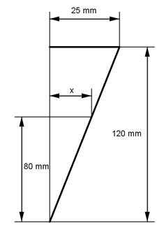

Aufgabe 236 Ein kegelförmiges Sektglas ist 120 mm hoch und hat einen Randdurchmesser von 50 mm. Der eingefüllte Sekt steht 8 cm hoch? Zu wie viel Prozent ist es gefüllt?  r = d/2 = 50 mm/2 = 25 mm 8 cm = 80 mm Strahlensatz: 120 mm : 80 mm = 25 mm : x 120 mm * x = 80 mm * 25 mm | :120 mm 80 mm * 25 mm x = ----------------- = 16,7 mm 120 mm л * r² * h120 л * 25² mm² * 120 mm V120 = ----------------- = ------------------------ = 78 500 mm³ 3 3 л * x² * h80 л * 16,7² mm² * 80 mm V80 = ---------------- = ------------------------- = 23 352 mm³ 3 3 Verhältnisgleichung: 78 500 : 100% = 23 352 : x% x * 78 500 = 23 352 * 100 |:78 500 23 352 * 100 x = --------------- = 29,7 % 78 500